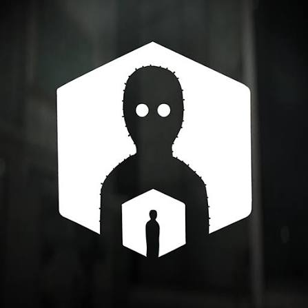

“The past and future are connected.”
The Past Within é uma aventura cooperativa de puzzles desenvolvida pela Rusty Lake. Pela primeira vez na franquia, dois jogadores precisam trabalhar juntos para solucionar os mistérios da história, cada um observando uma parte diferente da realidade. Um jogador permanece no Passado, enquanto o outro está no Futuro. Mesmo estando em períodos diferentes, os dois precisam conversar, compartilhar o que estão vendo e utilizar as informações um do outro para resolver os enigmas e descobrir o plano de Albert Vanderboom.
A história gira em torno de Albert Vanderboom, um dos personagens mais misteriosos da família Vanderboom. Anos após acontecimentos importantes envolvendo sua família, um plano elaborado começa a conectar diferentes momentos no tempo. Para descobrir o que Albert está planejando, dois jogadores precisam explorar simultaneamente o passado e o futuro, encontrando pistas e resolvendo enigmas espalhados pelos dois períodos. Enquanto um jogador explora os acontecimentos do Passado, o outro observa as consequências no Futuro. As duas perspectivas são diferentes, mas estão diretamente conectadas: uma ação ou informação encontrada em um período pode ser necessária para solucionar um enigma no outro. Somente através da comunicação entre os jogadores é possível compreender completamente o plano de Albert e avançar pela história.